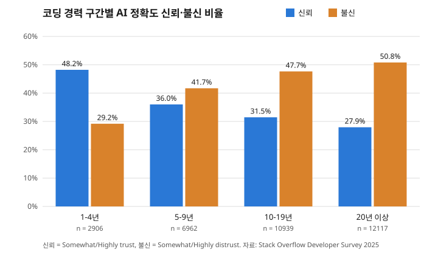

목적. 코딩 경력이 긴 개발자일수록 AI 도구 출력의 정확도를 덜 신뢰하는지 확인한다. 방법. Stack Overflow 개발자 설문 2025 공개 원자료에서 코딩 경력과 AI 정확도 신뢰(5단계)에 모두 답한 32,924명의 스피어만 순위상관을 계산했다. 지지 기준(ρ ≤ −0.05, p < 0.05)은 자료를 열기 전에 정했다. 결과. ρ = −0.134 로 가설은 지지되었고, 신뢰 비율은 경력 1–4년 48.2%에서 20년 이상 27.9%로 낮아졌다. 그러나 관계는 약했고, 직업 경력으로는 기준에 못 미쳤으며(ρ = −0.033), 문항이 다른 2026년 설문(7,158명)에서는 재현되지 않았다(ρ = +0.014). 결론은 2025년 설문 응답자의 정확도 신뢰 문항에 한정된다.
이 연구의 관심 분야는 AI와 함께 하는 소프트웨어 개발, 그 가운데 개발자가 AI 도구가 내놓은 결과를 얼마나 믿는가이다. 나는 AI와 함께 웹 앱을 만들며 개발을 배우고 있다. 배우는 입장에서는 AI가 준 코드를 그대로 믿기 쉬운데, 경력이 긴 개발자도 그런지, 경험이 쌓일수록 덜 믿게 되는지가 궁금했다. 연구 문제는 다음과 같다. 개발자의 코딩 경력과 AI 도구 출력의 정확도에 대한 신뢰 사이에 관계가 있는가?
아래 내용은 각 문헌의 서지 정보와 초록을 원출처에서 확인한 것만 적었다(확인 방법은 부록 C).
선행 연구가 보여 준 것은 주로 "AI의 도움 크기가 경력에 따라 다르다"와 "다른 분야의 숙련자가 알고리즘 조언에 덜 의존한다"이다. "개발자의 신뢰가 경력에 따라 다르다"를 설문 원자료로 직접 계산한 학술 문헌은 이번 검색 범위에서 확인하지 못했다. 이 연구는 그 부분을 공개 원자료로 확인한다. 아래 가설은 선행 연구에서 확인된 사실이 아니라 이번 연구가 검증하려는 주장이다.
가설. 개발자는 코딩 경력(연수)이 길수록 AI 도구 출력의 정확도를 신뢰하는 정도가 낮다.
영향을 주는 변수는 코딩 경력 연수, 영향을 받는 변수는 AI 도구 출력의 정확도에 대한 신뢰 정도이며, 예상하는 방향은 음(−)의 관계이다. 한 시점의 설문 자료이므로 인과가 아니라 두 변수 사이의 관계를 확인한다.
가설을 반증하는 결과. 코딩 경력과 신뢰 점수의 스피어만 순위상관 ρ 가 0 이상이면 가설은 반증된다. 즉 경력이 긴 응답자가 AI를 같거나 더 신뢰하는 경우이다.
AI와 세 차례에 걸쳐 후보를 검토했다. 검토한 주요 후보와 접은 이유는 표 1과 같고, 가설을 다듬은 과정은 부록 B에 적었다.
| 후보 가설 | 자료 | 접은 이유 |
|---|---|---|
| 할 일의 예상 시간이 길수록 실제 시간이 예상을 넘는 비율이 커진다 | 내 다이어리 기록 | 할 일 30개를 모으려면 2주 기록이 필요한데 마감(2026-11-18) 안에 채울 수 없다. |
| 빠른 템포의 음악을 들으면 30초 스쿼트 횟수가 늘어난다 | 직접 실험 | 사흘 안에 조건당 10회를 채우면 피로가 섞이고, 조건을 내가 알고 하므로 기대 효과를 막을 수 없다. |
| 걸음 수가 많은 날일수록 음악 재생 시간이 길다 | 내 앱 기록 | 음악 앱 재생 기록을 마감 안에 받는다는 보장이 없고, 개인 기록을 제출물에 넣어야 한다. |
| 체지방률이 높을수록 윗몸일으키기 횟수가 적다 | 국민체력100 측정 결과 | 인증키가 필요하고, 개인별 측정 항목이 실제로 제공되는지 확인하지 못했다. |
| 곡의 에너지가 높을수록 템포가 빠르다 | 스포티파이 곡 자료 | 개인이 모아 올린 2차 자료라 수집 시기가 없고 템포 0인 곡이 섞여 있다. 내 생활과의 연결도 약하다. |
| 비 오는 날은 따릉이 대여 건수가 줄어든다 | 서울시·기상청 자료 | 자료를 받는 경로를 확인하지 못했고, 이미 널리 알려진 결과이다. |
최종 가설을 고른 근거는 다섯 가지이다. ① AI와 함께 개발을 배우는 나와 직접 관련이 있다. ② 실험이나 인증키 없이 공개 파일로 기간 안에 끝낼 수 있다. ③ 설문을 실시한 기관이 원자료·문항 설명·조사 방법을 직접 공개한다. ④ 표본이 크고 반증 조건(ρ ≥ 0)이 분명하다. ⑤ 관련 실험 연구가 있어 선행 연구와 이어진다.
공개 설문 원자료를 분석했다(직접 실험이 아닌 공개 데이터 분석). 주 분석에는 2025년 자료를, 추가 검증에는 2026년 자료를 썼다.
| 항목 | 주 분석 자료 (2025) | 추가 검증 자료 (2026) |
|---|---|---|
| 자료 이름 | Stack Overflow Developer Survey 2025 공개 응답 자료 | Stack Overflow Developer Survey 2026 공개 응답 자료 |
| 제공 기관·라이선스 | Stack Exchange Inc., Open Database License(ODbL) 1.0 | |
| 출처 | https://github.com/StackExchange/Survey/tree/main/packages/archive/2025 | https://github.com/StackExchange/Survey/tree/main/packages/archive/2026 |
| 내려받은 날(접근일) | 2026-11-13 11:37 (KST) | 2026-11-13 11:44 (KST) |
| 파일 | data/raw/results.csv140,893,245 바이트, 49,191행 × 172열 | data/raw2026/survey_results_public.csv122,407,316 바이트, 30,903행 × 212열 |
| SHA-256 | 2d1f65308877282edfb4470520eabbc08cb499118432a3dcec6a66c086aa2baa | ad520b4d5d71f240141e63f0d6f81a3b1898cbdc69efe9ea985496533b15fc2c |
| 설문 조사 기간 | 2025-05-29 ~ 2025-06-23 | 2026-06-23 ~ 2026-08-05 |
두 파일의 SHA-256 값은 제공 기관 저장소에 등록된 값과 일치했다. 원자료는 내려받은 그대로 두었고 분석 스크립트는 읽기만 한다. 2025년 조사 방법 설명에는 응답 수가 49,009건으로 적혀 있으나(Stack Overflow, 2025b) 공개 파일은 49,191행이었다. 차이 182건의 이유는 확인하지 못했고, 공개 파일 전체를 사용했다.
| 개념 | 원자료 열 | 단위·값 | 측정 방법 |
|---|---|---|---|
| 코딩 경력 (독립변수) | YearsCode | 년 (정수) | "Including any education, how many years have you been coding in total?"에 적은 연수를 그대로 사용. 교육 기간 포함. |
| AI 정확도 신뢰 (종속변수) | AIAcc | 1–5점 | "How much do you trust the accuracy of the output from AI tools as part of your development workflow?"의 응답을 Highly distrust = 1, Somewhat distrust = 2, Neither trust nor distrust = 3, Somewhat trust = 4, Highly trust = 5 로 바꿈. |
| 직업 경력 (보조) | WorkExp | 년 (정수) | 직업으로 일한 연수를 그대로 사용. |
| AI 호감도 (보조) | AISent | 1–5점 | Very unfavorable = 1 … Very favorable = 5. "Unsure"는 순서를 정할 수 없어 제외. |
| 신뢰 비율·불신 비율 | AIAcc | % | 신뢰 비율 = Somewhat trust + Highly trust 의 비율, 불신 비율 = Somewhat distrust + Highly distrust 의 비율. |
| 구분 | 내용 |
|---|---|
| 비교 기준 (독립변수) | 코딩 경력 연수. 주 분석에서는 연수 그대로(순위), 보조 표에서는 네 집단(1–4년, 5–9년, 10–19년, 20년 이상)을 비교. |
| 측정 변수 (종속변수) | AI 정확도 신뢰 점수(1–5점). |
| 고정 조건 | ① 같은 파일 하나(표 2의 해시로 고정) ② 같은 문항 두 개 ③ 같은 점수표 ④ 같은 제외 규칙(두 문항 중 하나라도 비면 제외, 그 밖의 거르기 없음) ⑤ 같은 스크립트(파이썬 표준 라이브러리만 사용) ⑥ 국가·직무·나이로 미리 나누지 않음. |
| 표본 수 | 전체 응답자 49,191명 가운데 두 문항에 모두 답한 32,924명(제외 16,267명). |
| 분석 방법 | 스피어만 순위상관 ρ(같은 값은 평균 순위), 한쪽 검정 p 값(정규 근사), 피셔 z 변환 근사 95% 구간. |
| 판정 기준 | ρ ≤ −0.05 이고 한쪽 p < 0.05 이면 지지. −0.05 < ρ < 0 이면 방향만 일치(지지로 보지 않음). ρ ≥ 0 이면 반증. |
| 반복 | 실험이 아니므로 반복 횟수는 없다. 같은 파일과 스크립트로 다시 실행하면 같은 숫자가 나온다(부록 A). |
판정 기준은 원자료를 열기 전에 정했다. ρ 의 최소 크기 −0.05 를 둔 이유는, 응답자가 수만 명이면 0에 가까운 관계도 p < 0.05 가 되기 때문이다. 이 값은 연구자가 미리 정한 기준이며 널리 합의된 기준은 아니다. 판정에는 주 분석 하나만 쓰고, 보조 분석(경력 구간별 표, 직업 경력, AI 호감도)은 함께 보고하기로 했다.
본 분석 전에 예비 실행(scripts/pilot_check.py)으로 필요한 열이 있는지, 응답 보기가 무엇인지, 빈값이 몇 건인지만 확인했다. 경력과 신뢰를 함께 계산하지는 않았다. 이 점검 뒤, 본 분석 전에 다음을 바꾸거나 더했다.
본 분석 결과를 본 뒤에는 불일치 원인을 대조하는 탐색 분석(scripts/explore.py)과 2026년 자료를 쓴 추가 검증(scripts/replicate_2026.py)을 더했다. 두 가지 모두 사후에 추가한 것이므로 결과에서 따로 구분해 적었다. 변경 전의 원자료와 본 분석 결과는 그대로 보존했다.
2026년 설문의 신뢰 문항 AITrust("How much do you trust the output from AI tools or AI agents as part of your workflow?")는 2025년과 보기가 달랐다. 2025년은 불신에서 신뢰까지의 5단계였지만, 2026년은 어떤 일까지 믿고 맡기는지를 묻는다. 그래서 계산 방법과 예측을 2026년 자료로 경력과 신뢰를 함께 계산하기 전에 따로 정했다.
| # | 예측 | 충족 조건 |
|---|---|---|
| P1 | 코딩 경력이 길수록 신뢰가 낮다 (가설의 재확인) | ρ ≤ −0.05 이고 한쪽 p < 0.05. ρ ≥ 0 이면 재현 실패. |
| P2 | 차이는 초반에 가장 크다 | 신뢰 비율의 감소 폭이 1–4년 → 5–9년에서 가장 크다. |
| P3 | 직업 경력으로 보면 관계가 더 약하다 | 같은 응답자에서 |ρ(직업 경력)| < |ρ(코딩 경력)|. |
| P4 | 신뢰는 나이보다 코딩 기간에 따라 더 달라진다 | 나이대 사이 신뢰 비율의 최대–최소 차이가 코딩 경력 구간 사이의 차이보다 작다. |
P2~P4 는 2025년 자료의 탐색 분석(3.4절)에서 결과를 본 뒤에 떠올린 탐색적 가설을 새 자료로 확인하기 위한 예측이다.
Python 3.15.2 (Windows 11)에서 표준 라이브러리만 사용했다. 절차는 ① 원자료 내려받기와 해시 확인 ② 예비 실행 ③ 본 분석(scripts/analyze.py) ④ 탐색 분석 ⑤ 2026년 예비 실행과 추가 검증 순서이다. 분석 스크립트는 실제 자료에 쓰기 전에 무작위로 만든 가짜 자료로 동작을 확인했고, 순위상관 함수는 손으로 계산할 수 있는 예와 맞는지 확인했다. 본 분석과 추가 검증을 실행하기 직전의 문서·스크립트 해시는 results/prerun_hashes.txt, results/prerun_hashes_2026.txt 에 남겼다. 재현 방법은 부록 A에 있다.
| 항목 | 값 |
|---|---|
| 전체 응답자 | 49,191명 |
| 분석 대상 (두 문항 모두 응답) | 32,924명 (제외 16,267명. 코딩 경력 빈값 6,149건, 신뢰 빈값 15,894건, 중복 포함) |
| 스피어만 순위상관 ρ (코딩 경력 × 신뢰) | −0.1336 |
| 근사 95% 구간 | −0.1442 ~ −0.1229 |
| 한쪽 p 값 | 2.23 × 10−132 |
| 판정 | 지지 (ρ ≤ −0.05 이고 p < 0.05) |
분석 대상 건수 32,924는 설계에 적은 표본 수와 같다.
| 코딩 경력 | 응답자 | Highly distrust | Somewhat distrust | Neither | Somewhat trust | Highly trust | 신뢰 비율 | 불신 비율 | 평균 점수 |
|---|---|---|---|---|---|---|---|---|---|
| 1–4년 | 2,906 | 266 | 582 | 657 | 1,181 | 220 | 48.2% | 29.2% | 3.174 |
| 5–9년 | 6,962 | 1,179 | 1,724 | 1,552 | 2,289 | 218 | 36.0% | 41.7% | 2.805 |
| 10–19년 | 10,939 | 2,274 | 2,940 | 2,283 | 3,141 | 301 | 31.5% | 47.7% | 2.658 |
| 20년 이상 | 12,117 | 2,771 | 3,385 | 2,575 | 3,130 | 256 | 27.9% | 50.8% | 2.564 |

| 분석 | 종류 | n | ρ | 근사 95% 구간 |
|---|---|---|---|---|
| 직업 경력 × 신뢰 | 보조 (사전 계획) | 30,780 | −0.0334 | −0.0446 ~ −0.0223 |
| 코딩 경력 × AI 호감도 | 보조 (사전 계획) | 32,337 | −0.0614 | −0.0723 ~ −0.0506 |
| 코딩 경력 50년 이하만 | 민감도 (예비 실행 뒤 추가) | 32,741 | −0.1331 | −0.1437 ~ −0.1225 |
| AI 도구를 쓰는 응답자만 | 민감도 (예비 실행 뒤 추가) | 25,852 | −0.1046 | −0.1166 ~ −0.0925 |
코딩 경력(ρ = −0.134)과 직업 경력(ρ = −0.033)의 결과가 다른 이유를 찾기 위해 원인 후보 네 가지를 적고 데이터로 대조했다. 이 절의 계산은 본 분석 결과를 본 뒤에 추가한 탐색 분석이며 가설 판정에 쓰지 않았다.
| 후보 | 대조 결과 | 판단 |
|---|---|---|
| 표본이 다르다 (직업 경력이 0이면 빈칸이라 배우는 사람이 빠짐) | 세 문항에 모두 답한 같은 30,632명에서 코딩 경력 ρ = −0.1400, 직업 경력 ρ = −0.0330 | 원인이 아님. 표본을 맞춰도 차이가 그대로다. |
| 관계가 초반 몇 해에 몰려 있다 | 코딩 경력 5년 이상만 ρ = −0.0863 (n = 30,018), 10년 이상만 ρ = −0.0509 (n = 23,056) | 일부 설명. 초보 구간을 빼면 관계가 약해진다. |
| 응답자 유형이 다르다 (배우는 사람이 섞임) | 배우는 사람 1,215명의 신뢰 비율 45.3%, 직업 개발자 25,560명 32.3%. 직업 개발자만으로도 ρ = −0.1268 | 원인이 아님. 직업 개발자 안에서도 관계가 거의 같다. |
| 나이와 겹친다 | 나이대별 신뢰 비율은 18–24세 31.7%, 25–34세 33.7%, 35–44세 33.0%, 45–54세 32.3%, 55–64세 31.1%, 65세 이상 28.4%. 같은 나이대 안에서의 ρ 는 −0.176 ~ −0.313 | 원인이 아님. 신뢰는 나이에 따라 거의 달라지지 않았다. |
직업 경력 구간별 신뢰 비율은 1–4년 34.2%, 5–9년 33.2%, 10–19년 33.1%, 20년 이상 30.6%로 거의 평평했다. 이 탐색에서 "신뢰는 나이나 직장 연차가 아니라 코딩을 해 온 기간과 관련이 있고, 차이는 처음 5년 안에 가장 크다"는 탐색적 가설이 떠올랐다. 이것은 결과를 본 뒤에 만든 것이므로 같은 자료로 검증된 것으로 보지 않고, 새 자료(2026년)로 확인했다.
2026년 자료에서 신뢰 문항에 답한 14,230명("Not sure"와 빈값 제외) 가운데 코딩 경력에도 답한 사람은 13,914명이었다. 이 가운데 조건부 보기("when I can easily verify the output")가 6,756명(48.6%)이었고, 주 계산에는 나머지 7,158명이 쓰였다.
| 코딩 경력 | 응답자 | 대부분의 일에 신뢰 안 함 | 저위험 일만 | 쉽게 확인할 수 있을 때 | 많은 일 (중요한 결정 제외) | 많은 일 (중요한 결정 포함) | 신뢰 비율 | 불신 비율 |
|---|---|---|---|---|---|---|---|---|
| 1–4년 | 1,001 | 97 | 222 | 416 | 186 | 80 | 26.6% | 9.7% |
| 5–9년 | 2,455 | 278 | 469 | 1,188 | 414 | 106 | 21.2% | 11.3% |
| 10–19년 | 4,717 | 617 | 766 | 2,245 | 817 | 272 | 23.1% | 13.1% |
| 20년 이상 | 5,741 | 725 | 811 | 2,907 | 852 | 446 | 22.6% | 12.6% |
| # | 예측 | 2026년 자료에서 나온 값 | 결과 |
|---|---|---|---|
| P1 | 코딩 경력이 길수록 신뢰가 낮다 | 주 계산 ρ = +0.0137 (n = 7,158, 근사 95% 구간 −0.0095 ~ 0.0369). 민감도 계산 ρ = +0.0216 (n = 13,914, 구간 0.0050 ~ 0.0382) | 재현 실패 (ρ ≥ 0). 두 계산의 결론이 같다. |
| P2 | 감소는 1–4년 → 5–9년에서 가장 크다 | 신뢰 비율 감소 폭 5.4%p, −1.9%p(증가), 0.5%p | 충족 |
| P3 | 직업 경력의 관계가 더 약하다 | 같은 6,908명에서 코딩 경력 ρ = +0.0101, 직업 경력 ρ = +0.0727 | 불충족 |
| P4 | 나이대 사이 차이가 경력 구간 사이 차이보다 작다 | 나이대 사이 5.3%p (19.9% ~ 25.2%), 경력 구간 사이 5.4%p (21.2% ~ 26.6%) | 조건은 충족했으나 차이가 0.1%p 라 사실상 같다. |
2026년 자료에서 2025년과 같은 방향으로 남은 것은 코딩 경력 1–4년 구간의 신뢰 비율이 가장 높고(26.6%) 불신 비율이 가장 낮았다(9.7%)는 점이다.
미리 정한 기준에 따라 가설은 2025년 자료에서 지지되었다. 판단의 근거는 표 6의 ρ = −0.1336 (n = 32,924)과 한쪽 p = 2.23 × 10−132 이며, 두 값 모두 사전에 정한 조건(ρ ≤ −0.05, p < 0.05)을 충족한다. 반증 조건(ρ ≥ 0)에는 해당하지 않는다. 이 판단을 뒷받침하는 원자료 값은 표 7의 응답 수이다. 1–4년 구간 2,906명 가운데 신뢰 응답은 1,181 + 220 = 1,401명(48.2%)이고, 20년 이상 구간 12,117명 가운데 신뢰 응답은 3,130 + 256 = 3,386명(27.9%)이다.
다만 이 지지는 세 가지 점에서 제한된다. 관계가 약하고, 직업 경력으로는 미리 정한 크기에 미치지 못했으며, 문항이 다른 2026년 자료에서는 재현되지 않았다.
코딩 경력과 직업 경력의 결과가 다른 원인으로 네 후보를 검토했다(표 9). 표본의 차이, 응답자 유형, 나이는 원인이 아니었고, 관계가 초반 몇 해에 몰려 있다는 점이 차이의 일부를 설명했다. 선행 연구와 견주면, 숙련자가 알고리즘 조언에 덜 의존한다는 결과(Logg 외, 2019)와 AI의 도움이 경력이 낮은 쪽에 더 크다는 결과(Brynjolfsson 외, 2025)는 2025년 자료의 방향과 맞는다. 반면 숙련 개발자도 AI의 효과를 실제보다 좋게 느꼈다는 결과(Becker 외, 2025)는 경력이 길어도 신뢰가 크게 낮아지지 않을 수 있음을 보여 주며, 이 연구에서 관계가 약했던 점과 어긋나지 않는다.
2026년 자료에서 재현되지 않은 이유로는 세 가지를 생각할 수 있다. ① 2025년의 관계가 그 해, 그 문항에서만 나타난 약한 관계일 수 있다. ② 두 문항이 서로 다른 것을 잰다. 2025년은 출력의 정확도에 대한 신뢰를, 2026년은 어떤 일까지 맡기는지를 물었다. ③ 1년 사이에 도구와 사용 방식이 달라졌을 수 있다. 응답자 구성도 다르다. 이 자료로는 세 가지를 가를 수 없다.
가설과 판정 기준은 고치지 않았고, 처음 정한 문장과 기준 그대로 판정했다. 결과를 본 뒤에 떠올린 탐색적 가설("신뢰는 나이나 직장 연차가 아니라 코딩을 해 온 기간과 관련이 있고, 차이는 처음 5년 안에 가장 크다")은 처음 가설과 구분해 적었고, 2026년 자료로 미리 예측을 정해 확인한 결과 핵심 예측 P1 과 P3 이 틀려 지지되지 않았다.
Stack Overflow 개발자 설문 2025 에서 코딩 경력과 AI 정확도 신뢰에 모두 답한 32,924명을 분석한 결과, 코딩 경력이 긴 응답자일수록 AI 도구 출력의 정확도를 신뢰하는 점수가 낮은 경향이 있었다(스피어만 ρ = −0.1336). 이 값은 자료를 열기 전에 정한 지지 기준을 충족하므로 가설은 지지되었다. 신뢰한다고 답한 비율은 코딩 경력 1–4년에서 48.2%, 20년 이상에서 27.9%였다.
그러나 이 관계는 약하다. 경력은 신뢰 순위 변동의 약 2%를 설명했고, 차이의 대부분은 경력 1–4년과 5–9년 사이에서 나타났다. 경력을 직업 경력으로 재면 ρ = −0.0334 로 미리 정한 크기에 미치지 못했다. 또 2026년 설문의 다른 신뢰 문항으로 같은 계산을 미리 정해 두고 다시 했을 때에는 음의 관계가 나타나지 않았다(ρ = +0.0137, n = 7,158). 따라서 이 자료가 뒷받침하는 결론은 "2025년 설문 응답자 가운데 코딩을 시작한 지 얼마 안 된 사람이 그 밖의 사람보다 AI 출력의 정확도를 더 신뢰한다고 답하는 경향이 있었고, 문항이 다른 2026년 설문에서는 그 관계가 확인되지 않았다"까지이다. 두 해에서 공통으로 남은 것은 코딩 경력 1–4년 구간의 신뢰 비율이 다른 구간보다 높았다는 점이다(2025년 48.2%, 2026년 26.6%. 문항이 달라 두 값을 서로 견줄 수는 없다).
나에게 주는 의미는 이렇다. 나는 코딩 경력이 짧은 쪽에 속하고, 두 해의 자료 모두에서 그 집단은 AI의 결과를 신뢰한다고 답한 비율이 가장 높았다. 이 연구는 그 신뢰가 옳은지 그른지는 말해 주지 않는다. 다만 내가 속한 집단이 AI를 가장 많이 믿는 쪽이라는 사실은, AI가 준 결과를 내가 직접 확인하는 습관을 가질 이유가 된다.
결론은 2025년 5–6월과 2026년 6–8월에 Stack Overflow 설문에 스스로 응답한 사람들에 대한 것이며, 전체 개발자나 한국 개발자에 대한 결론이 아니다. 확인한 것은 두 변수 사이의 관계이고, 같은 사람을 여러 해 따라간 자료가 아니므로 "경력이 쌓이면 신뢰가 줄어든다"는 변화나 인과는 말할 수 없다.
원자료가 뒷받침하지 않아 결론에서 뺀 주장은 다음과 같다. "경력이 쌓이면 AI를 덜 믿게 된다"(변화와 인과), "경력자가 AI를 더 정확히 평가한다" 또는 "초보자가 AI를 지나치게 믿는다"(누가 옳은지는 이 자료에 없다), "한국 개발자도 그렇다"(국가별 분석을 하지 않았다).
Becker, J., Rush, N., Barnes, E., & Rein, D. (2025). Measuring the impact of early-2025 AI on experienced open-source developer productivity. arXiv. https://arxiv.org/abs/2507.09089
Brynjolfsson, E., Li, D., & Raymond, L. (2025). Generative AI at work. The Quarterly Journal of Economics, 140(2), 889–942. DOI: 10.1093/qje/qjae044
Logg, J. M., Minson, J. A., & Moore, D. A. (2019). Algorithm appreciation: People prefer algorithmic to human judgment. Organizational Behavior and Human Decision Processes, 151, 90–103. DOI: 10.1016/j.obhdp.2018.12.005
Noy, S., & Zhang, W. (2023). Experimental evidence on the productivity effects of generative artificial intelligence. Science, 381(6654), 187–192. DOI: 10.1126/science.adh2586
Peng, S., Kalliamvakou, E., Cihon, P., & Demirer, M. (2023). The impact of AI on developer productivity: Evidence from GitHub Copilot. arXiv. https://arxiv.org/abs/2302.06590
Perry, N., Srivastava, M., Kumar, D., & Boneh, D. (2023). Do users write more insecure code with AI assistants? In Proceedings of the 2023 ACM SIGSAC Conference on Computer and Communications Security (CCS '23) (pp. 2785–2799). https://arxiv.org/abs/2211.03622
Stack Overflow. (2025a). 2025 Developer Survey: AI. Stack Exchange Inc. https://survey.stackoverflow.co/2025/ai
Stack Overflow. (2025b). 2025 Developer Survey: Methodology. Stack Exchange Inc. https://survey.stackoverflow.co/2025/methodology
Vaithilingam, P., Zhang, T., & Glassman, E. L. (2022). Expectation vs. experience: Evaluating the usability of code generation tools powered by large language models. In CHI Conference on Human Factors in Computing Systems Extended Abstracts (CHI EA '22) (pp. 1–7). DOI: 10.1145/3491101.3519665
Wang, R., Cheng, R., Ford, D., & Zimmermann, T. (2024). Investigating and designing for trust in AI-powered code generation tools. In Proceedings of the 2024 ACM Conference on Fairness, Accountability, and Transparency (FAccT '24). https://arxiv.org/abs/2305.11248
표기 형식은 APA 7판을 따랐다. 학술지·학회 논문의 DOI 는 주소가 아닌 식별자로 적었다.
제출 ZIP 을 풀면 논문, 원자료, 스크립트, 결과 파일이 함께 들어 있다. Python 3.9 이상만 있으면 되고 추가 설치는 없다.
ZIP 을 푼 폴더에서 아래 명령 하나를 실행한다.
python scripts/verify.py
이 스크립트는 ① 두 원자료 파일의 SHA-256 이 표 2의 값과 같은지 확인하고 ② 본 분석, 탐색 분석, 2026년 추가 검증을 새 폴더(results_check)에 다시 실행한 뒤 ③ 제출한 결과 파일(results)과 한 글자도 다르지 않은지 견준다. 모두 같으면 마지막 줄에 "재현 확인: 모두 일치"가 나온다. 출력 가운데 "분석 대상(두 문항 모두 응답): 32924"와 "rho = -0.1336"이 표 6과 같은지 보면 된다.
python scripts/pilot_check.py data/raw/results.csv python scripts/analyze.py data/raw/results.csv results_check python scripts/explore.py data/raw/results.csv results_check python scripts/pilot_check_2026.py data/raw2026/survey_results_public.csv python scripts/replicate_2026.py data/raw2026/survey_results_public.csv results_check
표 2의 출처에서 2025년 폴더의 results.csv, schema.csv 와 2026년 폴더의 survey_results_public.csv, survey_results_schema.csv 를 내려받아 각각 data/raw, data/raw2026 폴더에 넣는다. 로그인은 필요 없다.
| 위치 | 내용 |
|---|---|
paper/paper.pdf, paper/paper.html | 논문(이 문서)과 원본 |
data/raw/, data/raw2026/ | 원자료와 문항 설명(내려받은 그대로) |
data/pilot_output.txt, data/pilot_output_2026.txt | 예비 실행 출력 |
scripts/ | 예비 실행, 본 분석, 탐색 분석, 추가 검증, 재현 확인 스크립트 |
results/ | 분석 출력, 구간별 표, 그림, 실행 직전 해시 기록 |
01-hypothesis.md ~ 05-replication.md | 단계별 작업 기록(가설, 선행 연구, 설계, 결과, 추가 검증) |
README.md | 재현 방법 요약과 "AI와 나의 판단 3줄" |
| 단계 | 내용 | 무엇이 문제였고 어떻게 바꿨나 |
|---|---|---|
| ① | AI가 "계획과 실행" 분야 후보 10개를 냈고, 다이어리 기록으로 "예상 시간 → 초과 비율" 가설 초안을 만들었다. | 2주 기록이 필요했다. 나는 주제를 더 생각해 보기로 하고 확정하지 않았다. |
| ② | 내 조건(나와 관련된 주제, 마감, 관심사인 운동·음악)을 알려 주자 AI가 직접 실험 5개를 제안했다. | 사흘 안에 반복 10회를 채우기 어려웠다. 논문만으로 확인할 수 있는지 물었고, AI는 원자료와 스크립트가 필요해 안 되지만 공개 데이터 분석은 된다고 답했다. 나는 공개 데이터 분석으로 정했다. |
| ③ | AI가 운동(국민체력100)과 음악(스포티파이 곡) 공개 자료를 찾아 확인했다. | 운동 자료는 인증키가 필요하고 항목을 확인하지 못했고, 음악 자료는 개인이 올린 2차 자료였다. 나는 운동·음악이 아니어도 과제 목적에 맞으면 된다고 범위를 넓혔다. |
| ④ | AI가 Stack Overflow 개발자 설문을 제안하고 문항 목록에서 필요한 문항이 있음을 확인했다. | 처음 문장 "경력이 길수록 AI를 덜 믿는다"에는 '경력'과 '믿는다'가 무엇인지 없었다. 경력은 교육 기간을 포함한 코딩 연수, 신뢰는 정확도 신뢰 문항의 5단계 점수로 고정했다. |
| ⑤ | 판정 기준을 정했다. | 응답자가 수만 명이면 p < 0.05 만으로는 아주 약한 관계도 지지가 된다는 점을 AI가 짚어, ρ ≤ −0.05 라는 최소 크기를 원자료를 열기 전에 정했다. |
자료 수집 범위. 2025년 설문(2025-05-29 ~ 2025-06-23 조사)의 공개 응답 전체 가운데 두 문항에 모두 답한 응답자. 국가나 직무로 미리 거르지 않았다.
AI가 제시한 문헌은 지어낸 것일 수 있으므로 문헌마다 다음 순서로 확인했다(확인한 날 2026-11-13).
확인은 초록과 서지 정보 수준이며 논문 본문 전체를 읽은 것은 아니다. 그래서 초록에 없는 세부 결과는 인용하지 않았다.
| 문헌 | 연구 종류 | 가설의 어느 부분과 이어지나 |
|---|---|---|
| Logg 외 (2019) | 실험 6개 | "경력이 길수록 덜 신뢰한다"는 방향의 근거. 대상은 개발자가 아니라 예측 전문가와 알고리즘 조언이다. |
| Brynjolfsson 외 (2025) | 현장 자료 (상담원 5,172명) | 경력에 따라 신뢰가 다를 수 있는 이유. 경험이 적을수록 AI에서 얻는 것이 많다. |
| Noy & Zhang (2023) | 무작위 실험 (453명) | AI의 도움이 능력이 낮은 쪽에 더 커서 격차가 줄어든다는 근거. |
| Peng 외 (2023) | 통제 실험 | 대상이 개발자인 실험. AI 도구의 효과가 개발자마다 다르다는 배경. |
| Becker 외 (2025) | 무작위 실험 (16명, 과제 246개) | 숙련 개발자에게는 AI가 덜 도움이 될 수 있다는 근거이자, 숙련자도 AI를 실제보다 좋게 본다는 점에서 가설과 반대일 수 있는 근거. |
| Perry 외 (2023) | 사용자 실험 | AI 출력에 대한 신뢰가 결과물의 질과 관련된 변수라는 근거. 신뢰를 종속변수로 잡은 이유. |
| Vaithilingam 외 (2022) | 사용자 실험 (24명) | 도구에 대한 선호와 실제 성과가 다를 수 있다는 근거. 신뢰와 호감도를 따로 본 이유. |
| Wang 외 (2024) | 질적 연구 (인터뷰 17명 등) | 개발자의 AI 신뢰가 연구 대상이 되는 개념이라는 배경. |
| Stack Overflow (2025a) | 설문 보고서 (기관) | 종속변수의 출처와 전체 분포. |
| Stack Overflow (2025b) | 조사 방법 설명 (기관) | 자료의 범위와 한계. |
| 걸러낸 것 | 제외 이유 |
|---|---|
| Dietvorst, Simmons, & Massey (2015), "Algorithm aversion", Journal of Experimental Psychology: General, 144(1), 114–126 | 실재와 서지는 확인했으나 초록을 직접 확인하지 못했고, 내용이 경력과 직접 이어지지 않는다. |
| "Peng 외 (2023)에서 경험이 적은 개발자가 더 큰 도움을 받았다"는 주장 | AI가 기억으로 말했지만 초록에 없는 내용이다. 문헌은 초록에 있는 내용만 인용했다. |
| 경력별 AI 불신 비율을 다룬 온라인 기사 (2025) | 2차 보도이며 경력별 수치의 원출처를 공식 보고서에서 찾지 못했다. 이 내용은 이번 연구가 원자료로 직접 계산했다. |
| Cui 외 (2025), 개발자 대상 현장 실험 | 검색 요약에서 이름만 보았고 원문과 서지를 확인하지 못했다. |
| Kahneman & Tversky (1979), Buehler, Griffin, & Ross (1994) | 처음 검토한 주제(계획 오류)의 문헌이며 주제를 바꾸면서 관련이 없어졌다. 원문 확인을 하지 않았다. |
| 단계 | AI에게 맡긴 일 | 내가 직접 판단한 일 |
|---|---|---|
| 가설 | 후보 주제 제안, 공개 자료 탐색, 문항 확인, 가설 문장과 판정 기준 초안 | 처음 초안을 확정하지 않고 다시 생각하기로 함. 직접 실험 대신 공개 데이터 분석으로 정함. 주제 범위를 운동·음악 밖으로 넓힘. 최종 가설 확정. |
| 선행 연구 | 문헌 목록 제시, 원출처에서 서지와 초록 대조, 확인되지 않은 문헌과 주장 제외 | 선행 연구 검증 단계를 시작하도록 지시. |
| 설계·실행 | 원자료 내려받기와 해시 대조, 예비 실행, 분석 스크립트 작성과 실행 | 원자료 내려받기 승인. 설계를 확인한 뒤 본 분석 실행 승인. |
| 해석 | 결과 표와 그림, 불일치 원인 후보 대조, 결론과 한계 초안 | 2026년 자료로 다시 확인하기로 결정. |
| 논문·ZIP | 논문 작성, 재현 확인 스크립트, ZIP 구성 | 제출 형식 정리 단계를 시작하도록 지시. |